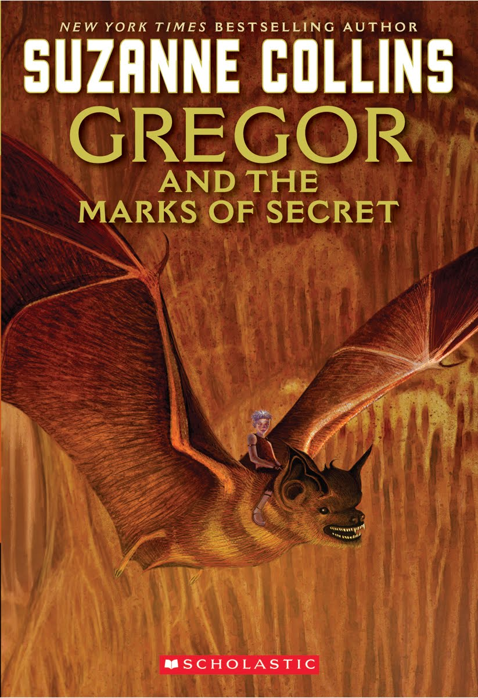

GREGOR AND THE CODE OF CLAW:
BOOK FIVE IN THE UNDERLAND CHRONICLES

"Perhaps Collins's greatest achievement in these tales is the effortless introduction of weighty geopolitical ethics into rip-roaring adventure. It seems as elusive in the Underland as up above, but Gregor and his companions, including the unforgettable rat Ripred, may yet find a way. The resolution is bittersweet but faintly hopeful—a fitting end for an unflinchingly gutsy series whose deftly drawn characters have always lived dangerously."
--Kirkus Reviews
"Collins delivers more of what's made this series so compelling: vivid action scenes, detailed military machinations, and nuanced character development. The plot moves swiftly but with deliberation, reflecting the Regalian leaders' strategic chess-game approach to the conflict. In the end, though the unimaginable doesn't happen, no one is without physical and emotional scars. Readers, too, will be battle-weary but buoyed by Collins's ultimate message of hope. As the Underlanders would say: fly you high, Gregor."
--The Horn Book Magazine
"Consistent quality has been a hallmark of this series. Although the story line has gradually become darker, Gregor maintains his endearing qualities as a reluctant hero. His love for his family and his compassion for his friends never flag. The world of Regalia, located below the streets of New York City, presents a magical realm of possibilities for young readers of this excellent acquisition for any library."
--VOYA
"A realistic conclusion, including the loss of old friends and a message about the importance of peace and trust, leaves readers with a sense of optimism about the future of the Underland. Friends and foes from the previous volumes reappear here, and Gregor's self-doubts and changing relationship with Luxa add to his depth as a protagonist. Fans of the series will find much to appreciate, from an enigmatic prophecy to the complex rat Ripred, and they'll be drawn in by Collins's tight pacing and sense of urgency."
--School Library Journal
"Another outstanding, riveting Gregor fantasy."
--Midwest Book Review
"The book is fast-paced, easy to read and contains plenty of battle scene and gore for young readers. But it also deals with a boy suddenly forced to make major decisions and face the true and terrible realism of war. The so-called "traitor rat," Ripred reappears and we learn the story behind his decision to join the forces opposed to The Bane. I find Ripred to be one of the most fascinating characters in the book. Armchair Interviews says: Fans of the earlier four books will find plenty of enjoy with this one.."
--Armchair Interviews